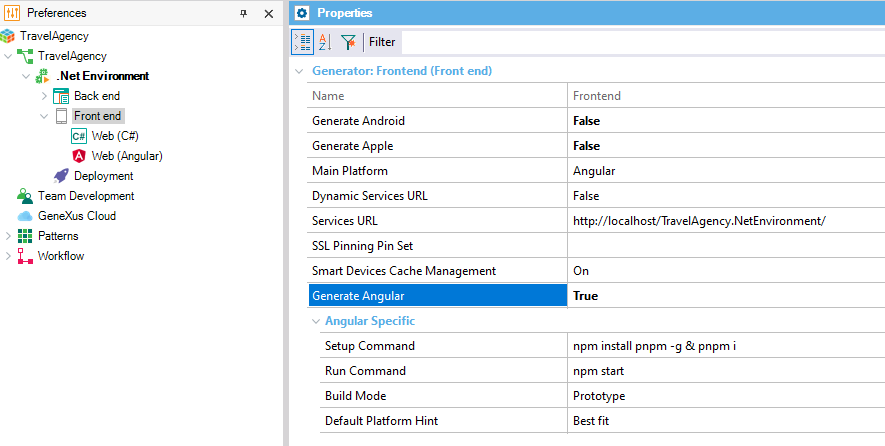
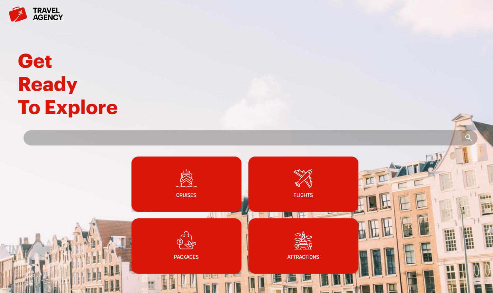

This guide shows you how to build and run a basic Angular app.
Check Angular Generator prerequisites for development environment.
You can generate your native mobile apps as web apps using Angular. If you don't have one already, you can start with TravelAgencyAngular KB from our sample server
And generate that KB with the Angular Generator.
Once you know which KB you want to generate with the Angular generator, open your Knowledge Base. Go to the Preferences. Select the Front end subnode under the Generators node under your Environment node.
Set the Generate Angular property to True.

Read How to execute an app using Angular Generator.
Your app will be running by default at http://localhost:4200.

| Backlinks |
| Toc:Angular applications development |